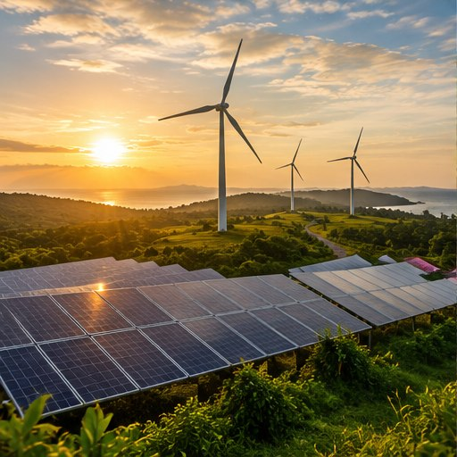

Energi terbarukan
Energi matahari, angin, dan air dapat menjadi alternatif sumber energi yang bergantung pada bahan bakar fosil. Peralihan ke energi rendah emisi membantu mengurangi emisi dari sektor energi.
04 / MENGURANGI EMISI
Dari energi terbarukan hingga perlindungan hutan, mitigasi membutuhkan perubahan kebiasaan sekaligus dukungan sistem dan kebijakan.
Jelajahi materi ↘
04 / MENGURANGI PENYEBAB
Mitigasi perubahan iklim adalah upaya untuk mengurangi emisi gas rumah kaca atau meningkatkan kemampuan alam dalam menyerap karbon. Tujuannya membatasi pemanasan global dan mengurangi risiko perubahan iklim di masa depan.
Mitigasi berbeda dari adaptasi. Mitigasi berfokus pada penyebab perubahan iklim, sedangkan adaptasi berfokus pada penyesuaian terhadap dampaknya. Keduanya dibutuhkan dan harus dilakukan bersamaan.
Sumber: UNDP Climate Promise (2024); Biro Publikasi UMA (2024).
LIMA ARAH TINDAKAN
Energi matahari, angin, dan air dapat menjadi alternatif sumber energi yang bergantung pada bahan bakar fosil. Peralihan ke energi rendah emisi membantu mengurangi emisi dari sektor energi.
Mematikan perangkat yang tidak digunakan dan memilih peralatan hemat energi menekan kebutuhan listrik. Dampak pengurangan emisi bergantung pada sumber energi yang digunakan.
Berjalan kaki, bersepeda, menggunakan transportasi umum, atau berbagi kendaraan dapat mengurangi emisi perjalanan jika menggantikan penggunaan kendaraan pribadi.
Hutan menyimpan karbon dalam vegetasi dan tanah. Melindungi hutan dan memulihkan kawasan terdegradasi membantu menjaga kemampuan alam menyerap karbon.
Kurangi barang sekali pakai, pilah bahan daur ulang, buat kompos dari sampah organik, dan gunakan kembali barang yang masih layak.
Individu, masyarakat, dunia usaha, dan pemerintah perlu berperan bersama. Tindakan pribadi penting, tetapi tidak menggantikan kebijakan dan perubahan sistem.
Sumber: UNDP Climate Promise (2024); Biro Publikasi UMA (2024).
SIAPA BERPERAN?
Mitigasi membutuhkan keputusan dan perubahan pada banyak tingkat. Kebiasaan individu akan lebih mudah dilakukan jika tersedia transportasi publik, energi bersih, fasilitas pengelolaan sampah, dan kebijakan yang mendukung.
Menghemat listrik, memilih mobilitas lebih bersih, mengurangi sampah, dan menggunakan barang secara bijak.
Meningkatkan efisiensi energi, mengurangi emisi produksi, serta memperbaiki pengelolaan limbah dan rantai pasok.
Mendukung energi terbarukan, transportasi publik, kebijakan pengurangan emisi, dan perlindungan hutan.
Sumber: UNDP Climate Promise (2024).
AKTIVITAS / PILIH AKSI
Pilih tindakan yang realistis dengan fasilitas dan kondisi yang tersedia. Checklist ini tidak mengukur pengurangan emisi secara numerik.
AKTIVITAS INTERAKTIF
Manakah contoh mitigasi perubahan iklim?
Pilih satu jawaban untuk melihat umpan balik. Kuis ini berjalan tanpa JavaScript.